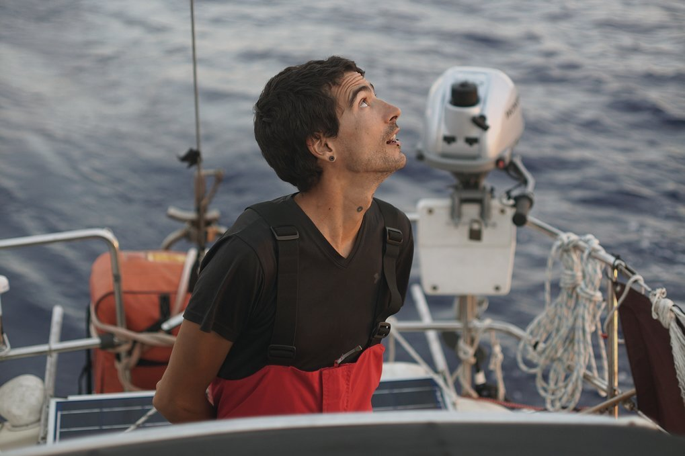

offshore
If you want to go offshore, there is a long list of safety items, tools and spares that you need to have. Read our offshore checklist. Make sure your boat is outfitted with all that is listed, and that your boat has all of the recommended safety features before leaving.
Here's a few quick tips for offshore sailing.
- Anything on deck is sacrificial.
- In heavy winds, heave-to, don't run.
- When tired, heave-to, don't push too hard.
- Learn how to self-steer without external devices.
- Buy a good set of oil skins.
- In the cold, wear wool, not synthetics.
- Store main anchor below decks.
- Secure all floorboards and doors.
Before every long passage, we do a thorough check of all equipment on board, this means looking at the stitching on the sails, testing the electronics, checking the running and standing rigging etc. For the first time, have someone with you to help, you can also hire professionals to inspect your boat. For example, we hired a rigger to inspect Pino's standing rigging when we were planning to go offshore for the first time. We asked him a lot of questions, watched how he did things etc.